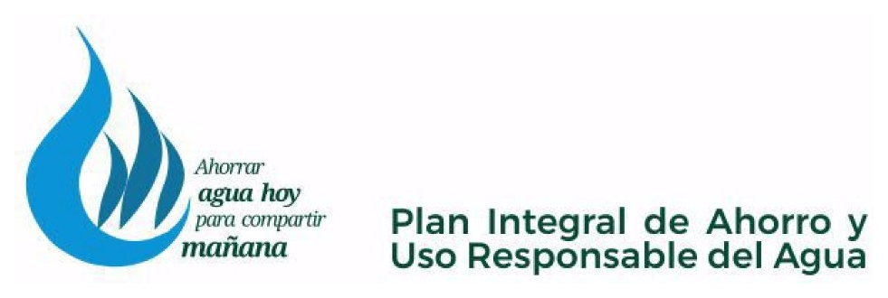

Misión
Promover el conocimiento científico y aplicado, la formación de capacidades y la transferencia a la comunidad sobre el ahorro y el uso responsable del agua, contribuyendo a una cultura hídrica responsable en la UCCuyo y su área de influencia.
Facultad de Ciencias Químicas y Tecnológicas
Impulsamos la investigación, la formación y la vinculación institucional sobre el ahorro y el uso responsable del agua, con enfoque académico, ético y regional, en el marco del Plan Integral AURA de la UCCuyo.
Director: Ing. Luis Jiménez · luisjimenez@uccuyo.edu.ar
Identidad
Dependiente de la Facultad de Ciencias Químicas y Tecnológicas de la Universidad Católica de Cuyo, el Instituto del Agua articula docencia, investigación y extensión en torno a la gestión sostenible del recurso hídrico en contextos áridos, con especial referencia a la provincia de San Juan.
Promover el conocimiento científico y aplicado, la formación de capacidades y la transferencia a la comunidad sobre el ahorro y el uso responsable del agua, contribuyendo a una cultura hídrica responsable en la UCCuyo y su área de influencia.
Consolidarse como referente académico y técnico en la gestión sostenible del recurso hídrico, en articulación con el Plan Estratégico Institucional 2023-2027 y el Plan Integral AURA.
Ing. Luis Jiménez
Director del Instituto del Agua — UCCuyo
luisjimenez@uccuyo.edu.ar
El Instituto desarrolla actividades orientadas a comprender, medir y mejorar el uso del agua en ámbitos institucionales, productivos y comunitarios.
Programa institucional

«Ahorrar agua hoy para compartir mañana»
El Plan Integral de Ahorro y Uso Responsable del Agua (Plan AURA) fue aprobado por la Resolución N.º 418-CS-2024 del Consejo Superior. Reconoce el contexto crítico de escasez hídrica de San Juan y asume el compromiso institucional de promover una gestión eficiente, responsable y sostenible del recurso en docencia, investigación y extensión.


«Que el Agua no sea signo de separación, sino de encuentro»
— Papa Francisco
Investigación y extensión
Convocatoria a proyectos de investigación y extensión vinculados al ahorro y uso responsable del agua, en el marco del Plan Integral AURA, bajo responsabilidad conjunta de la Secretaría de Investigación y la Secretaría de Extensión (acción prevista en la Resolución N.º 849-CS-2026).
Promover la presentación de proyectos de investigación y extensión vinculados al ahorro y uso responsable del agua que contribuyan a la generación de conocimiento aplicado, la sensibilización institucional y comunitaria, y la construcción de una cultura hídrica responsable en la UCCuyo y su área de influencia.
Docentes, investigadores, equipos de cátedra, estudiantes avanzados y equipos interdisciplinarios de las Unidades Académicas, Institutos y Colegios en todos sus niveles educativos de la Universidad Católica de Cuyo, Sede San Juan.
| Etapa / actividad | Fecha |
|---|---|
| Presentación de la propuesta ante Consejos y Consejo Superior | Agosto de 2026 |
| Apertura y período de presentación de proyectos | 15 sep. – 2 oct. 2026 |
| Cierre de recepción | 2 de octubre de 2026 |
| Evaluación de proyectos | 5 – 16 de octubre de 2026 |
| Presentación de aprobados ante Consejo Superior | Viernes 30 de octubre de 2026 |
| Oficialización del listado | 6 de noviembre de 2026 |
| Inicio de ejecución | Una vez aprobados por CS |
| Informe de avance (a los 6 meses) | Mayo de 2027 |
| Finalización e informe final | Hasta octubre de 2027 |
Presupuesto total: $20.000.000
Tope estimado de hasta $1.000.000 por proyecto. Duración:
doce (12) meses. El monto efectivamente asignado depende del presupuesto
presentado y de la evaluación del Comité Evaluador.
Criterios: pertinencia temática, rigurosidad metodológica y viabilidad en 12 meses, idoneidad del equipo (mínimo dos estudiantes), potencial de impacto, integración docencia–investigación–extensión, y sostenibilidad.
Marco normativo
Resoluciones del Consejo Superior y planificación de integración curricular que sostienen el Plan AURA y la convocatoria.
Comunicación
Facultad de Ciencias Químicas y Tecnológicas
Universidad Católica de Cuyo · Sede San Juan
Director: Ing. Luis Jiménez
luisjimenez@uccuyo.edu.ar
Instituto: institutodelagua@uccuyo.edu.ar
Convocatoria AURA (Secretarías): investigacion@uccuyo.edu.ar